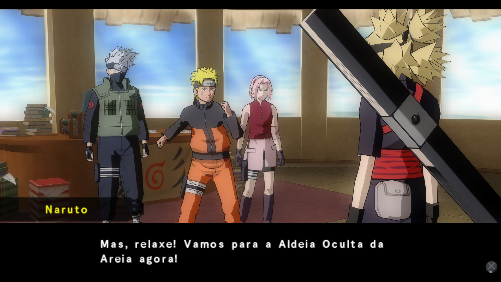
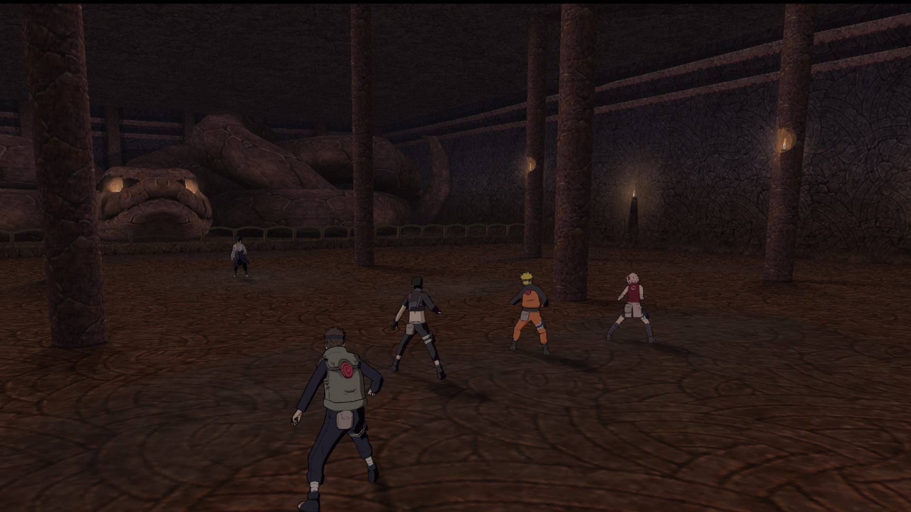

Lançado em 2007 no Japão, Naruto Shippuden: Ultimate Ninja 5 é um jogo de Luta/Aventura e o quinto jogo da franquia Ultimate Ninja, desenvolvido pela
CyberConnect2 e publicado pela Bandai Namco Games.
As grandes novidades do Naruto Shippuden: Ultimate Ninja 5 em comparação aos seus antecessores
são a quantidade de novos personagens e também o seu modo história que adapta os recém lançados dois primeiros arcos da série Naruto Shippuden, sendo eles:
Mesmo após todos esses anos a temida Akatsuki ainda continou na ativa, e agora o seu próximo alvo é Gaara! o Jinchuuriki da 1 Cauda, que tinha acabado de se tornar o Kazekage da Aldeia Oculta da Areia.
Diante dessa trágica situação, como um aliado, Aldeia Oculta da Folha envia o Time 7 para prestar apoio e regastar Gaara.
Durante o confronto contra a Akatsuki, um membro dela dá pistas sobre o paradeiro do Orochimaru, aproveitando essa oportunidade, Tsunade forma um Novo Time 7 para essa missão que também pode levar ao Sasuke.
Chegando no local da missão, Time 7 confronta o Orochimaru, mas ele consegue escapar, então, eles o perseguem e acabam encontrando o seu esconderijo,
que leva diretamente ao Sasuke...
Será que mesmo após esses anos Sasuke quer vingança e deseja ficar com Orochimaru em busca de poder?